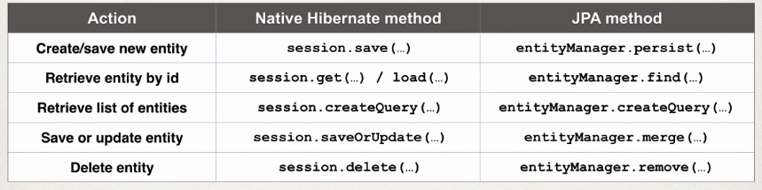

Until now, to manage data we have been using the EntityManager along with the Hibernate API. However now we are going to use the Standard JPA API.
The JPA API methods are similar to Native Hibernate API. It also supports a query language JPQL (JPA Query Language)
Comparing Hibernate to JPA:
